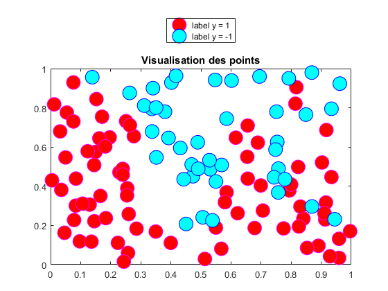
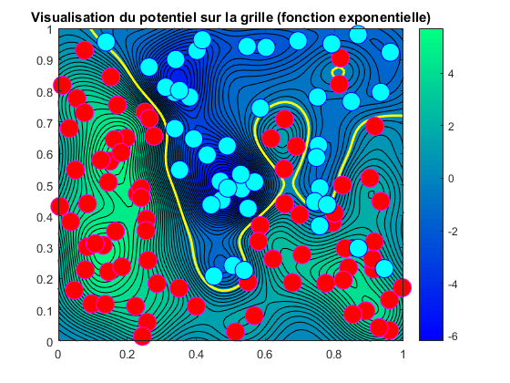
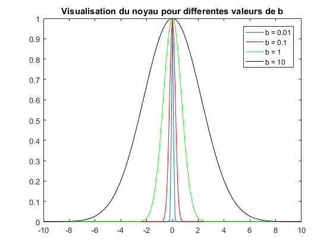
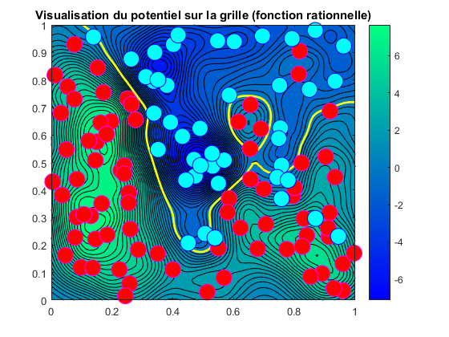
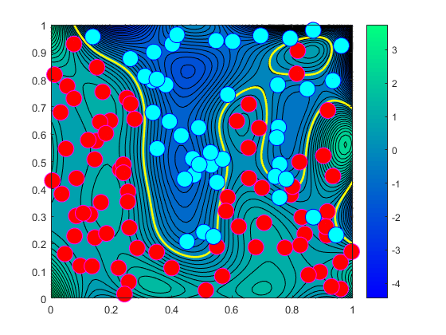

Contents
- TP1 - Noyaux
- 1. On charge les donnees
- 2. Visualisation des donnees
- 4. Grille pour la visualisation (sur le domaine [0, 1]²)
- 5. Calcul du potentiel sur tous les points de la grille
- 6. Visualisation du potentiel sur la grille
- 7. Influence du parametre b
- 8. Visualisation du kernel pour différentes valeurs de b
- 9. Fonction rationnelle (et non exponentielle)
- 10.
- Nombre d'erreurs
TP1 - Noyaux
Le but du TP est de d illustrer l importance des noyaux.
clear all; close all; clc;
1. On charge les donnees
120 observations xi et 120 labels yi (-1 ou 1)
load data_classif;
2. Visualisation des donnees
ip = find(yi == 1); im = find(yi == -1); figure(); set(gcf, 'Color',[1,1,1]) plot(xi(ip,1), xi(ip,2), 'o', 'MarkerFaceColor', 'r', ... 'MarkerEdgeColor', 'm', 'MarkerSize', 15); hold on; plot(xi(im,1), xi(im,2), 'o', 'MarkerFaceColor','c', ... 'MarkerEdgeColor', 'b', 'MarkerSize', 15); hold off; title('Visualisation des points'); legend('label y = 1', 'label y = -1', 'Location', 'NorthOutside');
4. Grille pour la visualisation (sur le domaine [0, 1]²)
[xtest1, xtest2] = meshgrid([0:.0125:1],[0:.0125:1]);
5. Calcul du potentiel sur tous les points de la grille
nn = length(xtest1); Xtest = [reshape(xtest1 ,nn*nn,1) reshape(xtest2 ,nn*nn,1)]; for i=1:length(Xtest) yp(i) = pred(Xtest(i,:), xi, yi); end
6. Visualisation du potentiel sur la grille
ypred = reshape(yp, nn, nn); figure(); set(gcf,'Color',[1,1,1]) colormap('gray'); contourf(xtest1, xtest2, ypred, 50); shading flat; hold on [cc, hh]= contour (xtest1, xtest2, ypred, [0 0], 'y-', 'LineWidth', 2); colormap('winter'); colorbar plot(xi(ip, 1), xi(ip, 2), 'o', 'MarkerFaceColor', 'r', ... 'MarkerEdgeColor', 'm', 'MarkerSize', 15); hold on plot(xi(im,1), xi(im,2), 'o', 'MarkerFaceColor', 'c', ... 'MarkerEdgeColor', 'b', 'MarkerSize', 15); hold off title('Visualisation du potentiel sur la grille (fonction exponentielle)')
7. Influence du parametre b
On remarque que les potentiels sont les plus forts (en valeur absolue) la ou on a le plus de points de la meme classe proches.
Lorsque l'on fait varier b, on fait changer l'ecart accepte pour le regroupement des points.
En augmentant b par exemple, la distance acceptee devient plus grande, et donc on a moins de regroupements. On tend alors vers un modele lineaire.
En revanche, pour un b plus petit, le modele devient plus precis, avec des variations de potentiel plus fortes. On colle trop au modele, et donc on n'a aucune marge de manoeuvre pour des predictions sur des donnees de test.
8. Visualisation du kernel pour différentes valeurs de b
figure() t = -10:0.1:10; plot(t, exp(-t.^2/0.01), ... t, exp(-t.^2/0.1), 'r', ... t, exp(-t.^2/1), 'g', ... t, exp(-t.^2/10), 'k'); title('Visualisation du noyau pour differentes valeurs de b') legend('b = 0.01', 'b = 0.1', 'b = 1', 'b = 10');
9. Fonction rationnelle (et non exponentielle)
nn = length(xtest1); Xtest = [reshape(xtest1 ,nn*nn,1) reshape(xtest2 ,nn*nn,1)]; for i=1:length(Xtest) yp(i) = predRationnel(Xtest(i,:), xi, yi); end ypred = reshape(yp ,nn,nn); figure(); set(gcf,'Color',[1,1,1]) colormap('gray'); contourf(xtest1,xtest2,ypred,50); shading flat; hold on [cc, hh]= contour (xtest1,xtest2,ypred,[0 0],'y-','LineWidth',2); colormap('winter'); colorbar plot(xi(ip,1), xi(ip,2),'o', 'MarkerFaceColor','r', ... 'MarkerEdgeColor','m', 'MarkerSize',15); hold on plot(xi(im,1), xi(im,2),'o', 'MarkerFaceColor','c', ... 'MarkerEdgeColor','b', 'MarkerSize',15); hold off title('Visualisation du potentiel sur la grille (fonction rationnelle)') % En comparant par rapport a la fonction exponentielle, on remarque qu'il % faut un b plus petit pour atteindre une separation acceptable.
10.
b = 0.2; K = calculNoyau(xi,b); a = learn( K, yi); for i=1:length(Xtest) yp(i) = preda(Xtest(i,:), xi, b, a); end ypred = reshape(yp ,nn,nn); figure(); set(gcf,'Color',[1,1,1]) colormap('gray'); contourf(xtest1,xtest2,ypred,50); shading flat; hold on [cc, hh]= contour (xtest1,xtest2,ypred,[0 0],'y-','LineWidth',2); colormap('winter'); colorbar plot(xi(ip,1), xi(ip,2),'o', 'MarkerFaceColor','r', ... 'MarkerEdgeColor','m', 'MarkerSize',15); hold on plot(xi(im,1), xi(im,2),'o', 'MarkerFaceColor','c', ... 'MarkerEdgeColor','b', 'MarkerSize',15); hold off
Nombre d'erreurs
for i=1:length(xi) ybase(i) = preda(xi(i,:), xi, b, a); end ybase = ybase'; err = sum(sign(ybase) ~= yi); display('Nombre de points mal classes : '); display(err);
Nombre de points mal classes :
err =
5